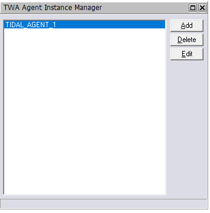
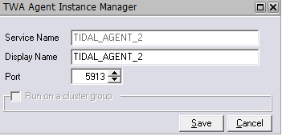
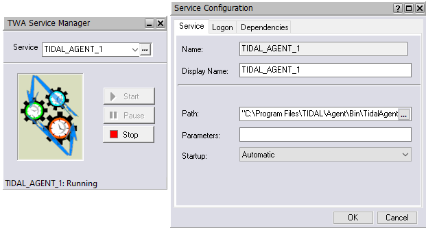
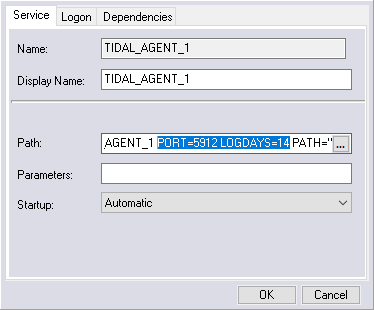

Configuring Windows agent instances
You can use the Agent Assistance Manager to configure an agent instance by:
- Adding an agent instance
- Modifying an agent instance
- Deleting an agent instance
- Configuring Windows Services for an agent
- Configuring agent parameters
Adding agent instances
To add an instance:
-
From the Windows Start menu, choose Programs > Tidal Automation > Agent > Instance Manager, right click on the Instance Manager and choose “Run as Administrator” to display the Instance Manager.

-
Click Add.
The following dialog box displays.

-
Enter the following:
-
Service Name: Name of the agent service. The name in this field is automatically generated and cannot be edited.
-
Display Name: Name of the agent to add. The name in this text field is automatically generated as a possible candidate for the name of your agent. You can keep or change the name.
-
Port: Port number the agent uses to listen for Master connections. By default, the TIDAL_AGENT_1 port is 5912. When you add additional agents, the port increments by 1 by default.
-
Run on a cluster group: Whether this agent instance is on a node that is configured for a cluster with an existing agent service. If the node is not part of a cluster, this option is unavailable. For more information, see Configuring the Windows Agent for a Cluster.
-
-
Click Save.
Note
To connect to the agent you just added, see Defining an Agent Connection.
Modifying an agent instance
You can modify the port number and the name of the instance that is displayed but the service name cannot be changed.
Note
The Edit button is unavailable as long as the agent is running.
To edit an agent instance:
-
Stop the agent.
-
From the Windows Start menu, choose All Programs > Tidal Automation > TA Service Manager to display the TA Service Manager.
-
From the Services list, choose TIDAL_AGENT_<#>.
-
Click Stop.
-
-
From the Windows Start menu, choose Programs > Tidal Automation > Agent > Instance Manager, right click on the Instance Manager and choose “Run as Administrator” to display the Instance Manager.
- Select the instance.
-
Click Edit.
The Edit dialog box displays.
-
Make the necessary edits, then click Save.
The Information dialog box displays.
-
Click OK.
-
Re-start the agent.
- From the Windows Start menu, choose All Programs > Tidal Automation > TA Service Manager to display the TA Service Manager.
- From the Services list, choose TIDAL_AGENT_<#>.
- Click Start.
Deleting an agent instance
Deleting agent instances does not delete the agent. Even if you delete all of the instances, you must still uninstall the agent program to remove the agent.
Note
The Delete button is unavailable as long as the agent is running.
To delete an instance:
-
Stop the agent.
- From the Windows Start menu, choose All Programs > Tidal Automation > TA Service Manager to display the TA Service Manager.
- From the Services list, choose TIDAL_AGENT_<#>.
- Click Stop.
-
From the Windows Start menu, choose Programs > Tidal Automation > Agent > Instance Manager, right click on the Instance Manager and choose “Run as Administrator” to display the Instance Manager.
- Select the instance.
-
Click Delete.
A confirmation message displays.
-
Click Yes.
Attention
Tidal recommends that you do not delete the last agent instance called agent_instance_1. You should instead uninstall the agent program to remove the last agent instance.
To delete an agent through the client, see Defining an Agent Connection.
Configuring Windows Services for an agent
After installing or adding agents, you can configure some Windows settings through the Services window, as documented below, or through the TA Services Manager as discussed in Verifying the Installation.
To configure an agent for Windows:
- From the Windows Start menu, choose Settings > Control Panel.
- Double-click Administrative Tools.
- Double-click Services.
- Double-click the agent you just installed.
- On the General tab of the AGENT Properties dialog box, select Stop to stop the service.
- On the Log On tab, select This Account.
- Enter the requested information in the User Name/Domain Name and Password fields, then select OK.
-
Do either of the following:
- Right-click the agent and choose Start.
- On the General tab, click Start to restart the agent.
-
Close the Services and Administrative Tools dialog boxes.
- Go to the client and follow the Defining an agent connection procedure to re-connect the agent.
Configuring agent parameters
You can configure the parameters of a Windows agent by adding the parameter statements to the Service Manager agent startup parameters or specifying them in the tagent.ini file. If the default location was used during the agent installation, the agent files are located in C:\Program Files\TIDAL\Agent\Bin.
Supported agent configuration parameters
The following table lists the supported configuration parameters. Some parameters can be set only through the Service Manager Service Configuration Parameter field, some can be set only in the tagent.ini file, and others can be set in either manner. The Set in column uses the following notations to indicate where a paramter can be set:
- INI: Can be set only in the tagent.ini file
- SCP: Can be set only through the Service Manager
-
SCP/INI: Can be set in either manner
Note
If you set a parameter in both locations, the value defined through the Service Manager takes precedence.
Setting configuration parameters through the Service Manager
To set configuration parameters through the Service Manager:
- From the Windows Start menu, start the Service Manager.
- Stop the agent if it is running.
-
In the Service field, select the desired agent and select the
 button.
button.The agent’s Service Configuration dialog box opens.

-
In the Path field, enter the parameter and value pairs you want to define.

Note
Any parameters specified in the Path field take precedence over anything specified in the tagent.ini file.
-
Select OK.
- Restart the agent.
Setting configuration parameters in the tagent.ini file
The tagent.ini file in the bin directory lets you configure global configuration parameters and configure parameters for individual agents. The file contains a [config] section and an [<Agent-Name>] section for each agent you want to configure. The parameters specified in the [config] section are global and the parameters specified in the [<Agent-Name>] section only apply to that agent and will override specifications in the [config] section for the specific agent.
Following is an example of a tagent.ini file:
[config]
debug=y
logdays=3
logsize=1024000
encryptonly=y
sslvldcrt=y
vldhstcrt=y this is a synonym for sslvldcrt, as host validation also applies to SSH (only works in tagent.ini)
[TIDAL_AGENT_1]
debug=high
logdays=5
logsize=2048000
encryptonly=n
vldhstcrt=n
To set configuration parameters in the tagent.ini file:
- Open the tagent.ini file in the agent’s bin directory.
- Add global and agent-specifc parameters as desired.
- Save the file.
- From the Windows Start menu, start the Service Manager.
- Start, or stop and restart, the agent.